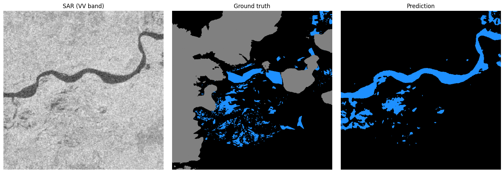
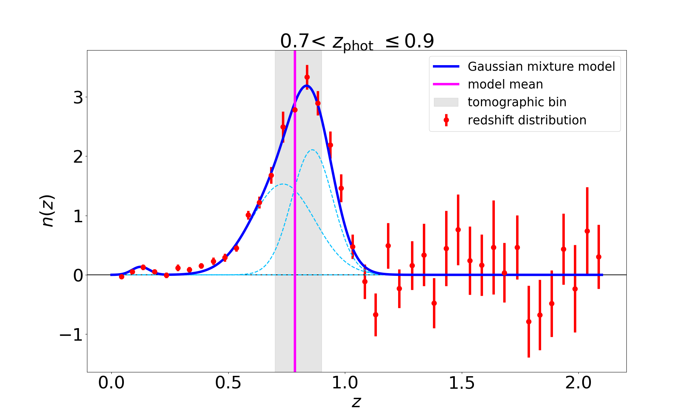

Things I built in my free time to explore new methods and tools.

Floods happen exactly when heavy cloud cover blocks optical satellites, but Synthetic Aperture Radar sees through clouds, day or night, at the cost of being hard to read directly. This project trains a U-Net with a ResNet34 encoder to segment water extent from raw Sentinel-1 imagery, trained on the Sen1Floods11 dataset, reaching a mean IoU of 0.79. It's trained on Vertex AI and deployed as a live, containerized API on Google Cloud Run.

Every large-scale structure measurement depends on knowing how far away the galaxies are, and photometric surveys only give a rough estimate. This project fits Gaussian mixture models to photometric redshift distributions using MCMC sampling, uses the Bayesian information criterion to decide how many components the data supports, and corrects iteratively for selection bias.